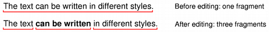

| Home · All Classes · Modules · QSS HELP · QSS 案例 · VER007 HOME |
该QTextFragment类包含一段文字中QTextDocument与单个QTextCharFormat。More...
该QTextFragment类包含一段文字中QTextDocument与单个QTextCharFormat。
文本片段描述一张存储与单个字符格式的文本。文本中的字符格式的变化可以通过文本片段具有不同格式的序列来表示。
如果用户编辑的文本片段，并引入不同的字符格式，片段的文字将被分割在各点的格式变化，以及新的片段将会被创建。例如，改变一些文本的样式在句子的中间将导致片段被分成三个独立的片段：第一个和第三个前具有相同的格式，第二个与新的风格。第一个片段将包含文本从句子的开头，第二个将包含从中间的文本，第三个从句子的结尾获取文本。

片段的文本和字符格式可以用得到text（）和charFormat（）函数。该length（）函数给出了在片段中的文本的长度。position（ ）给出了该片段的开始的文档中的位置。为了确定该片段是否包含在文档中的特定位置，请使用contains（）函数。
创建一个新的空文本片段。
返回文本片段的字符格式。
See also text（ ） 。
返回一个索引到文档内部的字符格式的文本片段的字符格式列表。
See also QTextDocument.allFormats（ ） 。
如果文本片段包含文本在给定的，则返回Trueposition在文件中，否则返回False 。
返回此文字片段的字形。字形的位置是相对于的位置QTextBlock的布局。
See also QGlyphRun，QTextBlock.layout（ ）QTextLayout.position（）和QPainter.drawGlyphRun（ ） 。
返回True如果这是一个有效的文本片段（即在文档中的有效位置），否则返回False 。
返回字符的文本片段的数量。
See also text（ ） 。
返回文档中当前文本片段中的位置。
返回文本片段的为纯文本。
See also length（）和charFormat（ ） 。
| PyQt 4.10.3 for X11 | Copyright © Riverbank Computing Ltd and Nokia 2012 | Qt 4.8.5 |